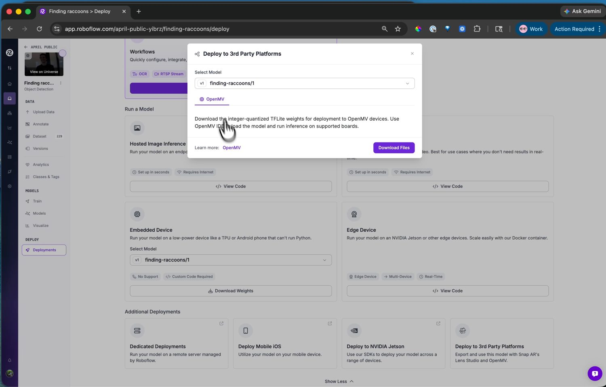

13.7.5. Triển khai lên camera¶
Mô hình đã huấn luyện nằm trên máy chủ của Roboflow. Để đưa nó lên camera chỉ cần một lần tải xuống, rồi thực hiện các bước tương tự như khi tải bất kỳ mô hình nào khác.
13.7.5.1. Tải xuống trọng số¶
Trên trang Deployments, chọn Deploy to 3rd Party Platforms và chọn tab OpenMV. Hệ thống tải xuống trọng số mô hình dưới dạng một tệp .tflite lượng tử hóa số nguyên duy nhất, được đặt tên theo dự án và phiên bản -- định dạng int8 mà engine TFLite của camera chạy.
{kind=link}

Mục tiêu triển khai OpenMV -- Download Files lưu trọng số .tflite sẵn sàng cho camera.¶
13.7.5.2. Tải lên camera¶
Thêm tệp .tflite vào camera bằng ROMFS editor của IDE, công cụ này chuyển đổi tệp cho NPU của bo mạch nếu bo mạch có NPU, sau đó tải nó trong tập lệnh bằng ml.Model. Các mô hình cũng chạy được từ ổ flash của camera -- sao chép tệp vào và trỏ ml.Model đến đường dẫn đó -- nhưng ROMFS là nơi lưu tốt hơn: các mô hình ở đó thực thi thẳng từ flash mà không cần bản sao trong RAM.
Đầu ra thô của mô hình phát hiện là một tensor tọa độ hộp và điểm số lớp vẫn cần giải mã. Các bộ phát hiện họ YOLO của Roboflow giải mã bằng các bộ xử lý hậu kỳ mà camera cung cấp trong ml.postprocessing.ultralytics, vì vậy chỉ vài dòng mã nối mô hình với bộ giải mã là bạn có hộp và nhãn.
Xem thêm
Xem chương học máy để chạy mô hình với module ml -- tải mô hình, pipeline suy luận, và hướng dẫn giải mã đầu ra họ YOLO.